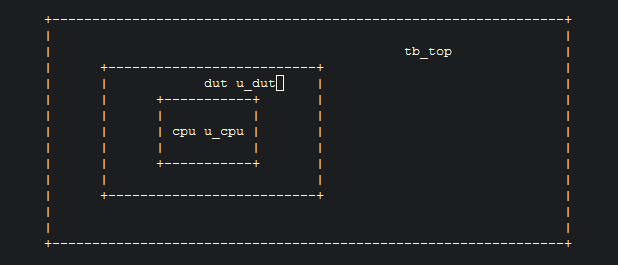

irun MSIE tips
irun MSIE
前一阵子折腾MSIE的验证环境，现在环境比较稳定了，也是时候来总结一下了。
MSIE的全称是Multi-Snapshot Incremental Elaboration，是cadence的irun工具的一个feature。使用这个feature可以节约仿真的编译时间，其本质就是把一些子模块编译好，顶层编译的时候直接把编译好的子模块的database拿过来，节省了elaboration的时间。
举一个例子，比如下面的一个验证环境。
其中，相对稳定基本不变的部分是cpu，其他的比如dut和tb_top会经常改变。那么cpu部分就可以提前编译好，作为一个database，官方叫法是primary snapshot。"挖掉"cpu的dut也可以作为一个primary snapshot。
具体的irun命令是:
cpu_compile:
irun $(MSIE_PRIM_OPT) -top cpu -name cpu -f cpu.f -nclibdirname $(WORKDIR)/cpu -l cpu_compile.log -incrpath tb_top.u_dut.u_cpu
dut_compile:
irun $(MSIE_PRIM_OPT) -top dut -name dut -f dut_no_cpu.f -nclibdirname $(WORKDIR)/dut_no_cpu -l dut_compile.log -incrbind cpu -incrpath tb_top.u_dut
tb_compile:
irun $(MSIE_INCR_OPT) -top tb_top -f tb_top_no_dut.f -l tb_compile.log -primname dut@$(WORKDIR)/dut_no_cpu -primname cpu@$(WORKDIR)/cpu
如果是后仿，还要做sdf反标，就要在compile每一个primary snapshot的时候把sdf文件吃进去，option是-sdf_cmd_file xx.cmd。sdf的拆分需要根据partition情况使用工具ncsdfc来完成。
Comments